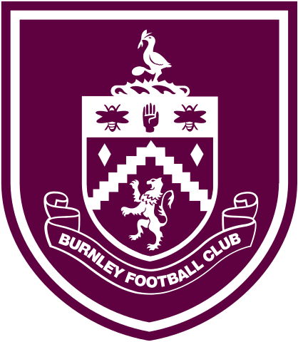
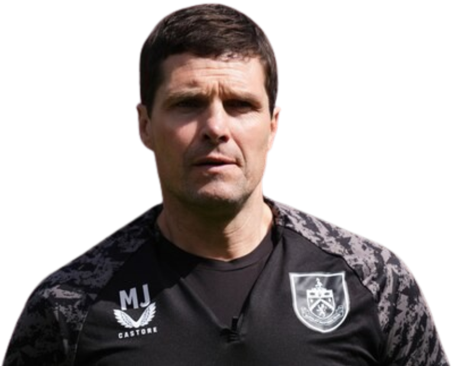

Treinador: Mike Jackson
Mike Jackson é um treinador resiliente e "homem da casa" no Burnley, com um passado de defesa sólido em clubes como o Preston e o Tranmere. Reconhecido pela sua lealdade e capacidade de unir o balneário, assumiu o cargo de interino em 2026 para estabilizar a equipa na reta final da Premier League e preparar o seu futuro regresso à elite.

Estádio: Turf Moor
A história do Turf Moor remonta a meados do século XIX, sendo um local de atividades desportivas desde pelo menos 1843, quando o Burnley Cricket Club se mudou para a área. O nome "Turf Moor" deve-se ao facto de o local ter sido usado para cortar turfa e, mais tarde, para corridas de cavalos.

Estilo de Jogo:
Sob o comando de Mike Jackson, o Burnley em 2026 adotou uma postura de "regresso às bases". O seu estilo de jogo foca-se na estabilidade emocional e no pragmatismo tático para estancar a crise de resultados.
"Hold to the Truth!"